BLUE WOODS No.1 POP-UP SHOP
会期の暦 SCHEDULE
八日間のうつりかわりを、
一枚に並べました。
12.24SUN
12.25MON


12.26TUE
12.27WED

12.28THU
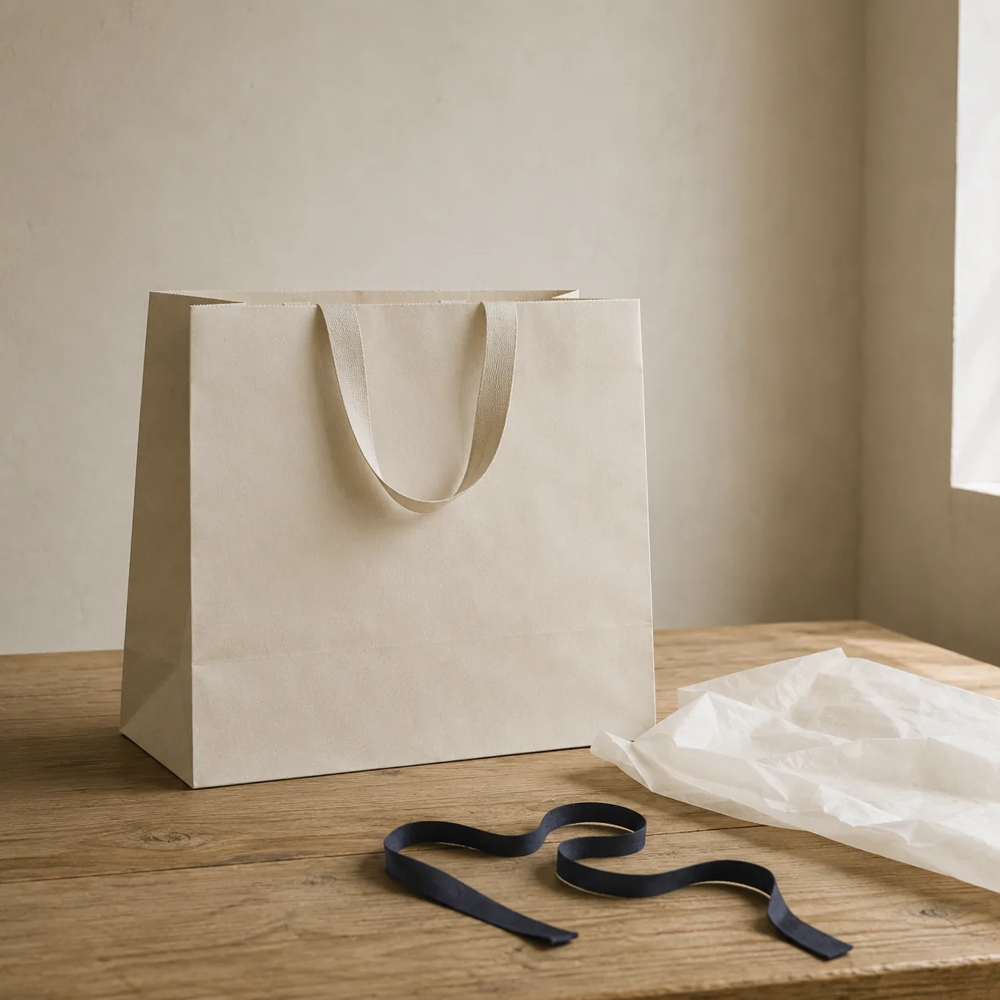
12.29FRI
12.30SAT

12.31SUN

※ 会期中は無休、11:00 — 20:00（最終日は20:00まで）。入場は無料です。混みあう時間は14時から16時ごろです。
ABOUT THE POP-UP 八日間だけの売り場
12月24日から12月31日までの8日間、青木東京店の2Fイベントスペースを会期のあいだだけ組み替えます。什器は無垢材と真鍮、床には会期のためだけに織った生成りの敷物を敷きました。壁は塗り直さず、もとの色のまま使っています。
会期中は今季の10型をすべて手にとってご覧いただけます。丈のお直しと釦の付け替えは会場で承り、仕上がりは年明けのお渡しです。生地見本と下げ札の紙見本も、会場の奥に並べてあります。
2F イベントスペース／およそ 210㎡・入口は東側
会場のご案内六つの組み合わせで、
十型をご紹介します。
商品のこと ITEM LINE UP
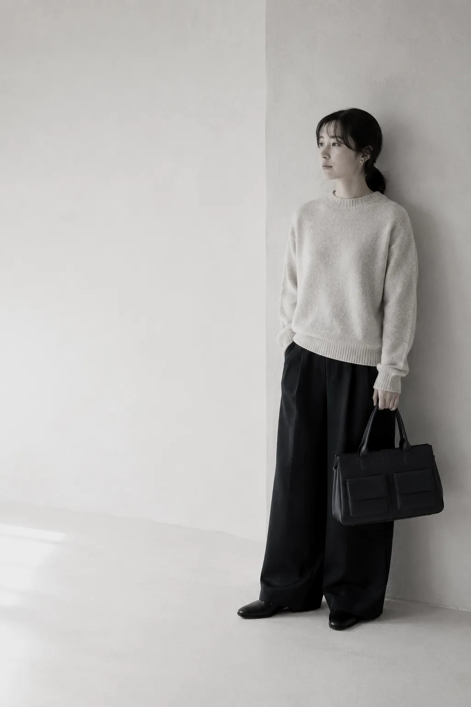
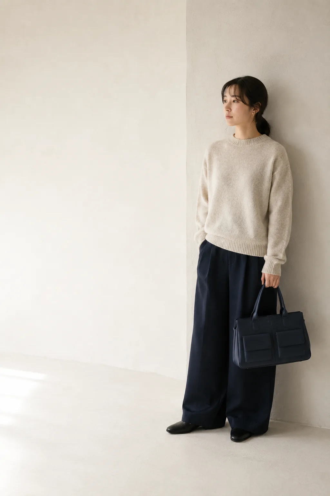
[01]
TWIN FLAP
CITY
BAG
¥18,600 tax in
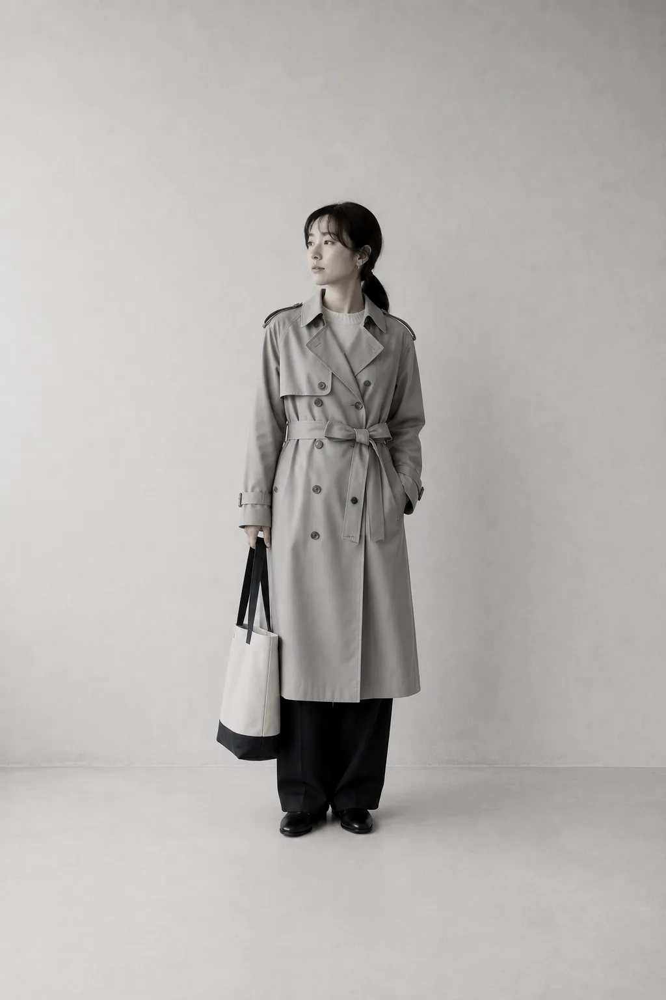
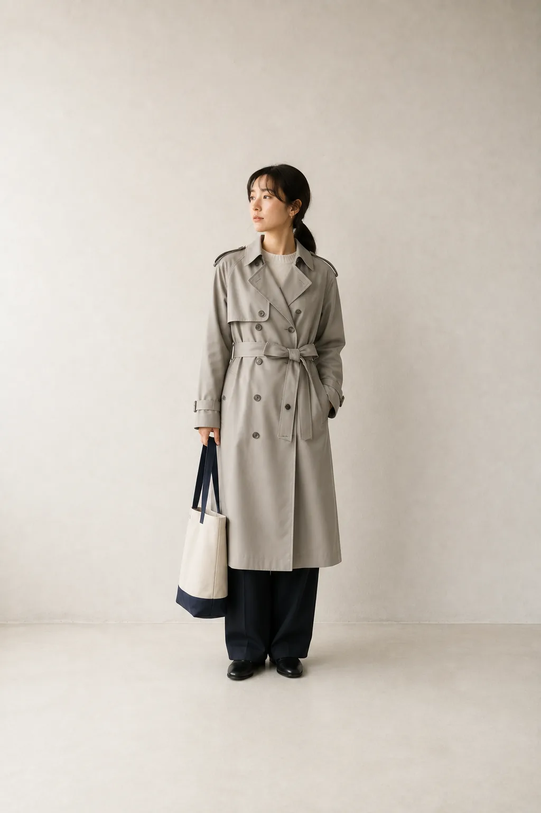
[02]
TWO-TONE
SLIM TOTE
BAG
¥12,900 tax in
[03]
CLASSIC
TRENCH
COAT <GRAY>
¥27,400 tax in
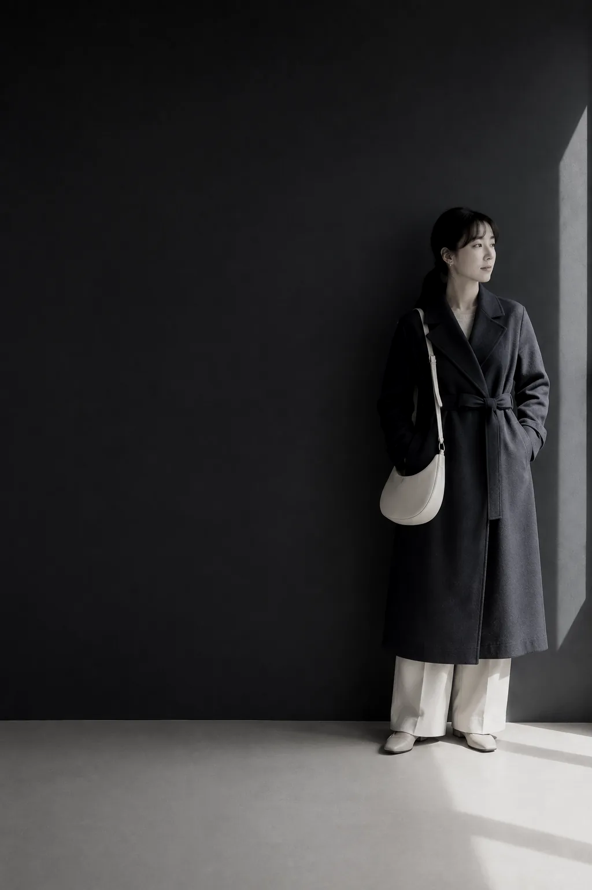
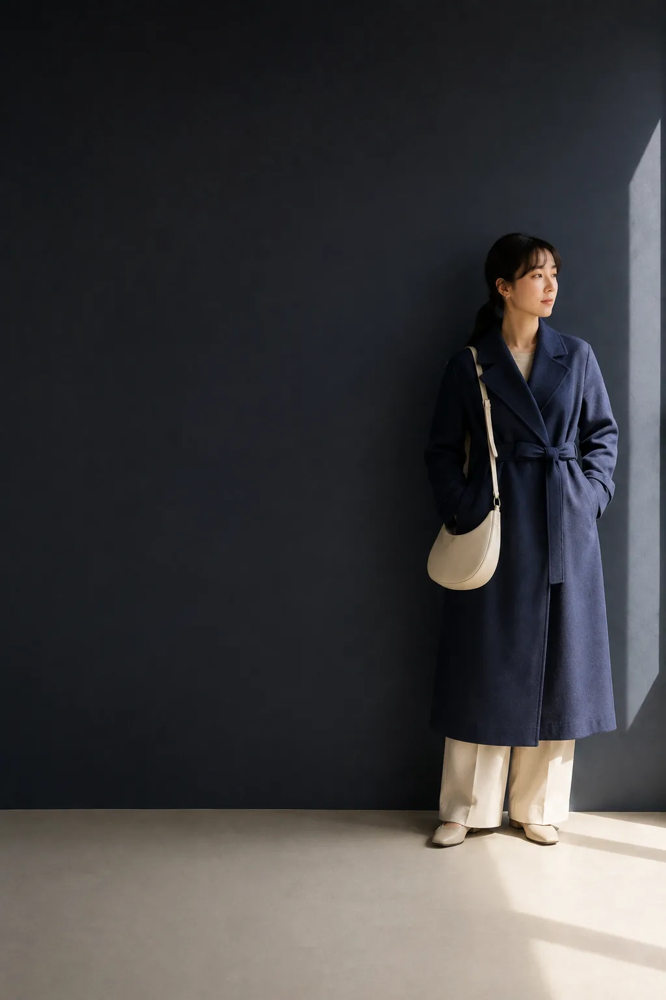
[04]
CURVE
MINI SHOULDER
BAG
¥16,800 tax in
[05]
SOFT BELT
LONG
COAT <BLUE>
¥24,700 tax in
-
VENUE
売り場は、光の弱い側に組みました
窓から遠い側に什器を寄せています。生地の色は、強い光の下では実際より明るく見えるためです。
-
MATERIAL
生地見本は、切りっぱなしで
端の始末をしていない見本を置いています。織りの詰まりかたは、切り口からのほうがよくわかります。
-
TAG
下げ札は無地の紙に改めました
品番は内側の縫い付けへ移しています。会期中は、その場で名前を入れる日を二日だけ設けました。
-
PACKING
包みは紙と綿だけで
持ち手も紙のものに切り替えました。贈りものの場合は、薄紙の色を二種類からお選びいただけます。
THE LOOKBOOK SPREAD 十型を、一枚に
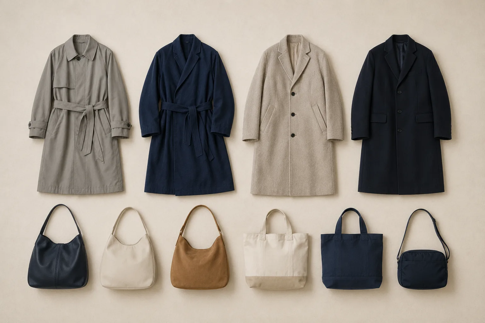
会場でお配りする見開きです。左にアウター四型、右にバッグ六型。丈と色の並びだけで組んであります。
ITEM LINE UP 商品のこと つづき
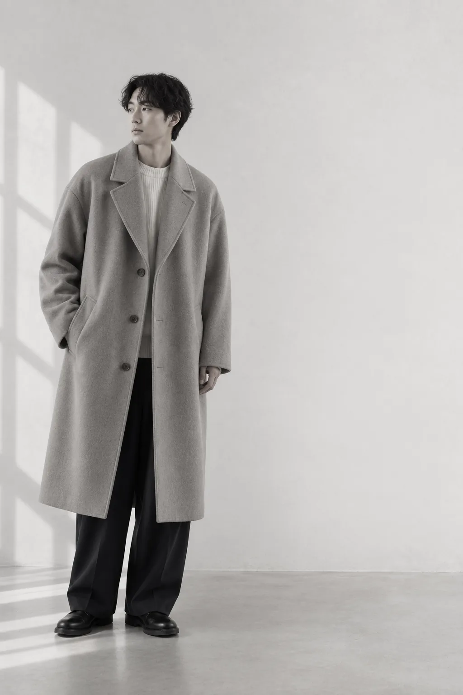
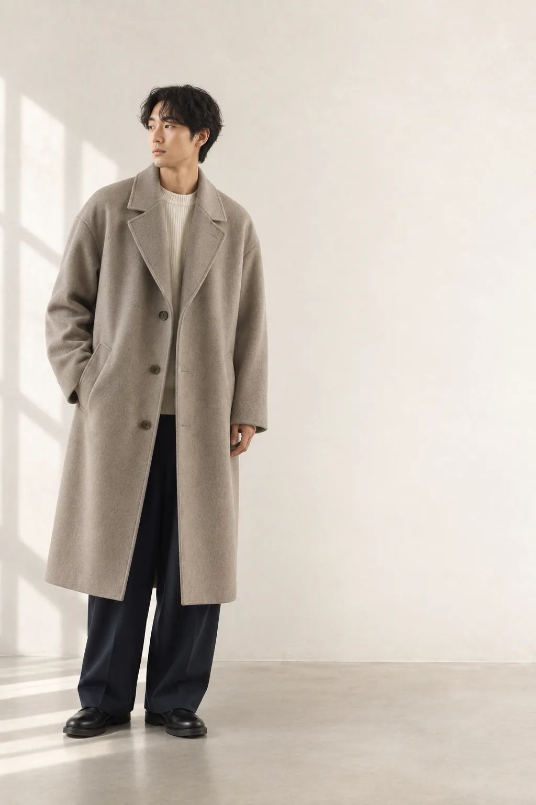
[06]
SINGLE
OVER
COAT
¥29,300 tax in
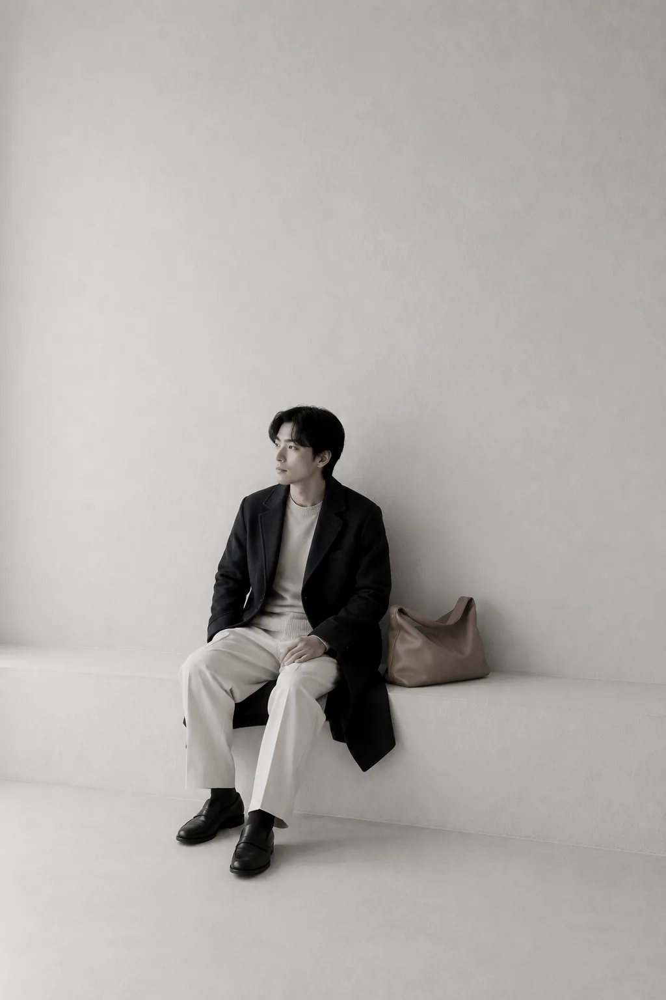
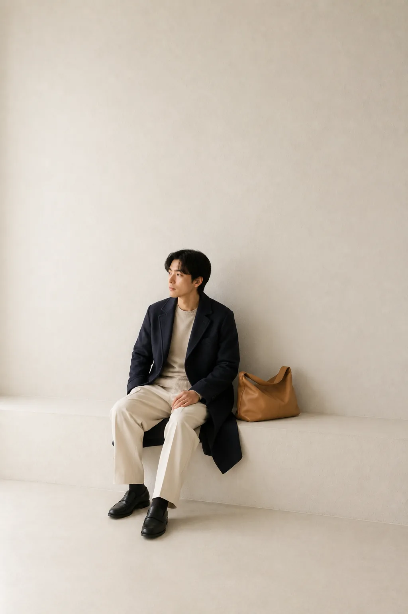
[07]
TAILORED
WOOL
COAT
¥22,800 tax in
[08]
SOFT
LEATHER
BAG
¥11,600 tax in
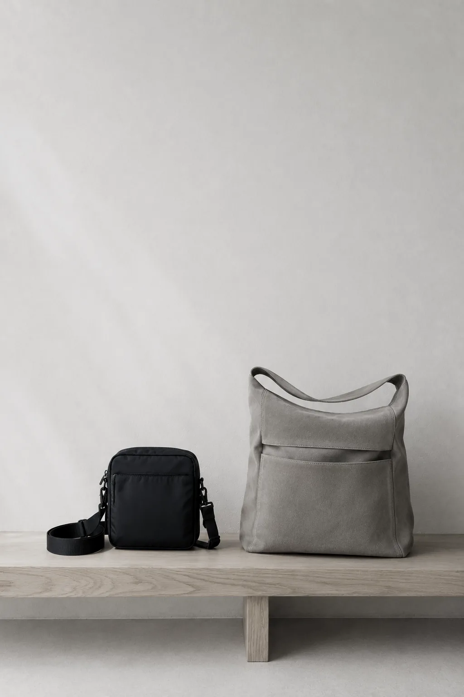
[09]
2WAY NYLON
CROSS BAG
¥19,200 tax in
[10]
FRONT POCKET
SHOULDER BAG
¥14,500 tax in

LOOKBOOK
十型を一枚に並べてみる
見開きに並べると、丈のばらつきと色の並びが一度にわかります。会場では原寸に近い大きさで壁に貼っています。

MATERIAL
今季の四つの生地
織りと起毛のちがいは、離れて見るとほとんど同じに見えます。近づいて、手で押してみるとはっきりします。

FITTING
丈は、靴に合わせて決める
同じ一着でも、合わせる靴で二センチほど印象が変わります。会場では履いてこられた靴のまま合わせていただけます。

CRAFT
釦をつけ替えるという直し
釦を替えるだけで、同じコートが数年ぶんあたらしくなります。会期中は八種類の中からお選びいただけます。

PACKING
紙と綿だけで包む
留め具を使わない包みかたに切り替えました。ほどいたあと、紙も綿もそのまま別の用に回せます。

TAG
下げ札を無地に改めた理由
札に書くことを減らすほど、生地そのものを見ていただけるようになりました。品番は内側へ移しています。

FIXTURE
什器は無垢材と真鍮で
会期のたびに組み替えられるよう、釘を使わずに組んでいます。会期が終わると、また平らな板に戻ります。

HOURS
会期中の、空いている時間
午前と、19時以降が落ち着いています。お直しのご相談をお考えの方は、この時間をおすすめしています。
INFORMATION 会期のご案内
12/24(日)より青木東京店 2Fイベントスペースにて、ポップアップショップを開催いたします。
BLUE WOODS No.1の魅力的な世界観とともにお買い物をお楽しみいただけます。
会期中無休 入場無料 お直し承ります
- 会期
- 2028.12.24(日) — 12.31(日)
- 時間
- 11:00 — 20:00（最終日も20:00まで）
- 会場
- 青木東京店 2Fイベントスペース
東京都青木区青木一丁目2-3 - 入場
- 無料・ご予約は不要です
- お問い合わせ
- 0120-123-456／info@example.com